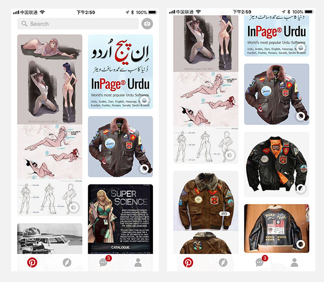
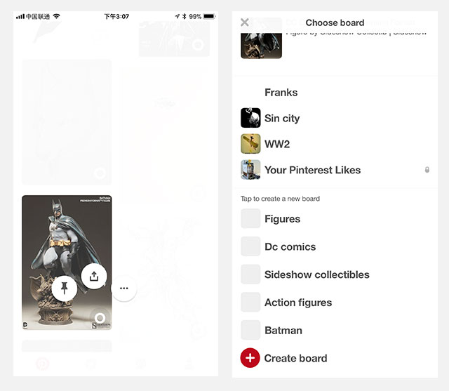
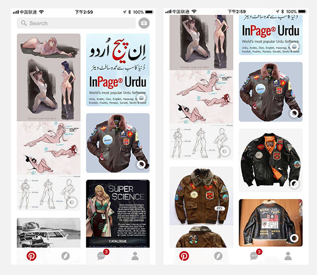
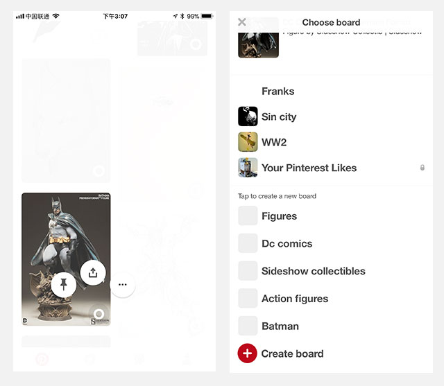

Pinterest如何提升首页效率
mark | 谢晓聪
#快速获取同类型内容#
Pinterest在首页下，有一个“more”的小圆圈按钮，当用户感兴趣某一张图的内容时，可以通过点击小圆圈按钮进行相关内容的快速匹配并替换当前页面的剩余内容。

这个小功能帮助用户节省了获取目标信息的路径成本，按之前操作方式是需要用户进入单张图片的详情页，通过详情页进行相关内容的推荐再分发。而现在只需要一步就能在首页进行快速的同类型/标签归属下的内容进行匹配推送。
#快速添加收藏夹#
快速添加收藏夹，是在用户点击收藏的按钮后默认给用户推荐N个已命名的收藏夹，这类收藏夹的名称是由系统自动判断并生成。而生成的名称基本比较符合用户对当前操作图片的类别预期，所以我猜测Pinterest的默认推荐收藏夹命名逻辑是根据当前图片的标签/分类/其他用户使用轨迹的综合判定而定的。

这样的功能，能帮助用户节省输入成本，对于有整理（归类）需求的用户而言是个非常高效且易用性比较高的操作行为。

Pinterest在首页下，有一个“more”的小圆圈按钮，当用户感兴趣某一张图的内容时，可以通过点击小圆圈按钮进行相关内容的快速匹配并替换当前页面的剩余内容。

这个小功能帮助用户节省了获取目标信息的路径成本，按之前操作方式是需要用户进入单张图片的详情页，通过详情页进行相关内容的推荐再分发。而现在只需要一步就能在首页进行快速的同类型/标签归属下的内容进行匹配推送。
#快速添加收藏夹#
快速添加收藏夹，是在用户点击收藏的按钮后默认给用户推荐N个已命名的收藏夹，这类收藏夹的名称是由系统自动判断并生成。而生成的名称基本比较符合用户对当前操作图片的类别预期，所以我猜测Pinterest的默认推荐收藏夹命名逻辑是根据当前图片的标签/分类/其他用户使用轨迹的综合判定而定的。

这样的功能，能帮助用户节省输入成本，对于有整理（归类）需求的用户而言是个非常高效且易用性比较高的操作行为。
562820976@qq.com | 联系